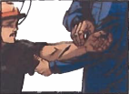
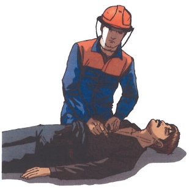

Билет №12
Вопрос 1. Назовите требования при транспортировке баллонов. (ИОТВ-21-15, п.3.5.6.-3.5.7.)
Ответ:
3.5.6. При погрузке и транспортировке баллонов необходимо соблюдать следующие требования:
при погрузке баллонов в кузов транспортного средства более чем в один ряд применяются прокладки, предохраняющие баллоны от соприкосновения друг с другом. Перевозка баллонов без прокладок запрещается;
запрещается совместная транспортировка кислородных и ацетиленовых баллонов как наполненных, так и порожних.
Допускается совместная транспортировка ацетиленового и кислородного баллонов на специальной тележке на пост сварки в пределах одного производственного корпуса.
3.5.7. Транспортировка баллонов к месту погрузки или от места их разгрузки осуществляется на специальных тележках, конструкция которых предохраняет баллоны от тряски и ударов. Баллоны размещаются на тележке лежа.
Вопрос 2. Основной опасный производственный фактор при работе на высоте. (ИОТВ-29-15, п.1.14.)
Ответ:
1.14. Основным опасным производственным фактором при работе на высоте является расположение рабочего места на значительной высоте относительно поверхности земли (пола), связанное с этим возможное падение работника или падение предметов на работника.
Вопрос 3. Требования охраны труда в аварийной ситуации при обслуживании средств КИПиА. (ИОТВ-11-15, п.4.)
Ответ:
Порядок действий в аварийных ситуациях на обслуживаемом оборудовании:
оповестить об аварийной ситуации или несчастном случае согласно действующей схеме оповещения;
принять меры по устранению или локализации аварийной ситуации, если жизни людей не угрожает опасность;
Обстановку на месте происшествия (аварии) оставить неприкосновенной, если это не угрожает жизни и здоровью других людей.
При внезапном отключении электроэнергии, пожаре, самопроизвольном смещении негабаритных грузов и т.п. принять меры предосторожности к предупреждению травмирования исполнителей и окружающих людей. О случившемся поставить в известность руководителя работ.
В случае угрозы жизни или здоровья слесарь КИПиА обязан немедленно покинуть опасную зону или принять меры, необходимые для своей защиты, оповестить технологический персонал.
При возникновении пожара:
при возникновении пожара в электроустановке немедленно отключить электрооборудование;
сообщить о пожаре согласно действующей схеме оповещения;
оказать первую (доврачебную) помощь пострадавшим в случае необходимости;
принять меры по устранению или локализации аварийной ситуации в объёме своих обязанностей, если это не угрожает жизни.
При появлении на объекте посторонних лиц, немедленно поставить в известность мастера и сообщить начальнику смены ЦИТС.
Вопрос 4. Назовите порядок оказания первой помощи при обмороке. (Инструкция для проведения обучения оказания первой помощи пострадавшим на производстве, п. 6.-6.2.)
Ответ:
6. Правила оказания помощи в случае кратковременной потери сознания (обморока):
Правило первое.
Убедиться в наличии пульса на сонной артерии.
Правило второе.
Расстегнуть воротник одежды, поясной ремень и приподнять ноги. Следует как можно скорее обеспечить свободный приток крови к головному мозгу.
Правило третье.
Во всех случаях потери сознания следует немедленно вызывать скорую помощь и обязательно настоять на госпитализации. Обморок часто является первым признаком различных заболеваний, внутренних кровотечений и отравлений.
Правило четвертое.
Следует сильно надавить на болевую точку, расположенную между перегородкой носа и верхней губой.
Если нет пульса на сонной артерии приступить к реанимации.
Если пострадавший(ая) в течение 3-4 минут не приходит в сознание? Повернуть на живот и очистить ротовую полость, см. п. 7.
6.1. Правила оказания помощи при подозрении на внутреннее кровотечение (частые обмороки):
Внимание! Частые повторные обмороки и боли в животе заставляют заподозрить опасное для жизни внутреннее кровотечение. Если такие пострадавшие в течение часа не окажутся на хирургическом столе, то они могут умереть от невосполнимой потери крови.
Правило первое.
Обеспечить положение лежа на спине с приподнятыми ногами.
Правило второе.
Приложить холод к животу. Желательно использовать «тяжелый» холод весом до 5 кг, который сдавит просвет кровоточащих сосудов, уменьшит боль и снизит скорость кровопотери.
Правило третье.
Нельзя предлагать обезболивающее, использовать грелки, кормить или поить.
Внимание! Использование холода с первых минут внутреннего кровотечения увеличивает время для транспортировки в больницу на 2-3 часа.
6.2. Правила оказания помощи в случае голодного обморока:
Правило первое.
Обеспечить покой в положении лежа на спине, либо полулежа до прибытия медицинского персонала.
Правило второе.
Предложить крепкий сладкий чай.
Правило третье.
Нельзя кормить и предлагать газированные напитки, сок или пиво.
Вопрос 5. Средства защиты используемые при работе в электроустановках. (ИОТВ-135-14, п.3.)
Ответ:
3.1. Персонал, проводящий работы в электроустановках, должен быть обеспечен всеми необходимыми средствами защиты, обучен правилам применения и обязан пользоваться ими для обеспечения безопасности работ.
3.2. Средства защиты должны находиться в качестве инвентарных в помещениях электроустановок или входить в инвентарное имущество выездных бригад. Средства защиты могут также выдаваться для индивидуального пользования.
3.3. При работах следует использовать только средства защиты, имеющие маркировку с указанием завода-изготовителя, наименования или типа изделия и года выпуска, а также штамп об испытании.
3.4. Инвентарные средства защиты распределяются между объектами (электроустановками) и между выездными бригадами в соответствии с системой организации эксплуатации, местными условиями и нормами комплектования.
3.5. Такое распределение с указанием мест хранения средств защиты должно быть зафиксировано в перечнях, утвержденных техническим руководителем организации или работником, ответственным за электрохозяйство.
3.6. При обнаружении непригодности средств защиты они подлежат изъятию. Об изъятии непригодных средств защиты должна быть сделана запись в журнале учета и содержания средств защиты или в оперативной документации.
3.7. Работники, получившие средства защиты в индивидуальное пользование, отвечают за их правильную эксплуатацию и своевременный контроль за их состоянием.
3.8. Изолирующими электрозащитными средствами следует пользоваться только по их прямому назначению в электроустановках напряжением не выше того, на которое они рассчитаны (наибольшее допустимое рабочее напряжение), в соответствии с руководством по эксплуатации, инструкциями, паспортами и т.п. на конкретные средства защиты.
3.9. Изолирующие электрозащитные средства рассчитаны на применение в закрытых электроустановках, а в открытых электроустановках только в сухую погоду. В изморось и при осадках пользоваться ими не допускается. На открытом воздухе в сырую погоду могут применяться только средства защиты специальной конструкции, предназначенные для работы в таких условиях.
Такие средства защиты изготавливаются, испытываются и используются в соответствии с техническими условиями и инструкциями.
3.10. Перед каждым применением средства защиты персонал обязан проверить его исправность, отсутствие внешних повреждений и загрязнений, а также проверить по срок следующего испытания. Не допускается пользоваться средствами защиты с истекшим сроком испытания.
3.11. При использовании электрозащитных средств не допускается прикасаться к их рабочей части, а также к изолирующей части за ограничительным кольцом или упором.
Вопрос 6. В каких случаях пострадавшему проводятся реанимационные мероприятия и как они выполняются (с отработкой практических навыков на тренажере). (Инструкция для проведения обучения оказания первой помощи пострадавшим на производстве, п. 4.2.-5.9.)
Ответ:
4.2 Последовательность действий при оказании первой медицинской помощи:
Такая очередность действий позволит сохранить жизнь пострадавшего до прибытия медицинских работников |
1. |
Нет сознания и нет пульса на сонной артерии (клиническая смерть) |
 |
Приступить к реанимации (см. п.5) |
2. |
Нет сознания, но есть пульс на сонной артерии (обморок или начало развития комы) |
 |
Попытаться привести пострадавшего в сознание (см. п.6)
Если в течени 3-4 минут это не удалось, обязательно повернуть его на живот (см. п.7) |
3. |
Обильное кровотечение |
 |
Быстро пережать конечность выше раны и наложить жгут (см. п.9) |
4. |
Наличие раны |

|
Наложить стерильные повязки (см. п.10.3) |
5. |
Признаки перелома конечностей |

|
Наложить транспортную шину (см. п.11) |
5. Правила определения признаков клинической смерти:
Правило первое.
Чтобы сделать вывод о наступлении клинической смерти у неподвижно лежащего пострадавшего, достаточно убедиться в отсутствии сознания и пульса на сонной артерии.
Правило второе.
Не следует терять время на определение сознания путем ожидания ответов на вопросы: «Все ли у тебя в порядке? Можно ли приступить к оказанию помощи?». Надавливание на шею в области сонной артерии является сильным болевым раздражителем.
Правило третье.
Не следует терять время на определение признаков дыхания. Они трудноуловимы, и на их определение с помощью ворсинок ватки, зеркальца или наблюдения за движением грудной клетки можно потерять неоправданно много времени. Самостоятельное дыхание без пульса на сонной артерии продолжается не более минуты, а вдох искусственного дыхания взрослому человеку ни при каких обстоятельствах не может причинить вреда.
Если подтвердились признаки клинической смерти? Быстро освободить грудную клетку от одежды приступить к сердечно-легочной реанимации см. пп.5.5; 5.6.

5.1. Правила определения пульса на сонной артерии:
Правило первое.
Расположить четыре пальца на шее пострадавшего (см. п.5.4) и убедиться в отсутствии пульса на сонной артерии.
Правило второе.
Определять пульс следует не менее 10 секунд.
5.2. Правила освобождения грудной клетки от одежды для проведения реанимации:
Правило первое.
Расстегнуть пуговицы рубашки и освободить грудную клетку.
Правило второе.
Джемпер, свитер или водолазку приподнять и сдвинуть к шее.
Правило третье.
Майку, футболку или любое нательное белье из тонкой ткани можно не снимать. Но прежде чем наносить удар по грудине или приступать к непрямому массажу сердца, следует убедиться, что под тканью нет нательного крестика или кулона.
Правило четвертое.
Поясной ремень обязательно расстегнуть или ослабить. Известны случаи, когда во время проведения непрямого массажа сердца печень повреждалась о край жесткого ремня.

Внимание! Перед тем как приступить к реанимации, необходимо уложить пострадавшего на жесткую и ровную поверхность, освободить грудную клетку от одежды и определить анатомические ориентиры (см. п. 5.4).
5.3. Правила освобождения грудной клетки от одежды для проведения реанимации, в случаях, когда на женщине надет бюстгальтер - его надо сдвинуть ближе к шее.
5.4. Анатомические ориентиры, необходимые для проведения сердечно-легочной реанимации:

5.5. Правила проведения непрямого массажа сердца и безвентиляционной реанимации:
Правило первое.
Расположить основание правой ладони выше мечевидного отростка так, чтобы большой палец был направлен на подбородок или живот пострадавшего. Левую ладонь расположить на ладони правой руки.
Правило второе.
Переместить центр тяжести на грудину пострадавшего и проводить непрямой массаж сердца прямыми руками.
Правило третье.
Продавливать грудную клетку не менее чем на 3-5 см с частотой не реже 60 раз в минуту.
Правило четвертое.
Каждое следующее надавливание начинать только после того, как грудная клетка вернется в исходное положение.
Правило пятое.
Оптимальное соотношение надавливаний на грудную клетку и вдохов искусственной вентиляции легких - 30:2, независимо от количества участников реанимации.
Правило шестое.
По возможности приложить холод к голове.
 Внимание! При каждом надавливании на грудную клетку происходит активный выдох, а при ее возвращении в исходное положение — пассивный вдох. Когда выделения
изо рта пострадавшего представляют угрозу для здоровья спасающего, можно ограничиться проведением непрямого массажа сердца, т.е. безвентиляционным вариантом реанимации.
Внимание! При каждом надавливании на грудную клетку происходит активный выдох, а при ее возвращении в исходное положение — пассивный вдох. Когда выделения
изо рта пострадавшего представляют угрозу для здоровья спасающего, можно ограничиться проведением непрямого массажа сердца, т.е. безвентиляционным вариантом реанимации.
Внимание! Чтобы непрямой массаж сердца был эффективным, его необходимо проводить на ровной жесткой поверхности.
Если под ладонью появился неприятный хруст (признак перелома ребер)? Уменьшить не глубину и силу, а ритм надавливаний и ни в коем случае не прекращать непрямой массаж сердца.
5.6. Правила проведения вдоха искусственной вентиляции легких (далее - ИВЛ) способом «изо рта в рот»:
Правило первое.
Правой рукой обхватить подбородок так, чтобы пальцы, расположенные на нижней челюсти и щеках пострадавшего, смогли разжать и раздвинуть его губы.
Правило второе.
Левой рукой зажать нос.
Правило третье.
Запрокинуть голову пострадавшего и удерживать ее в таком положении до окончания проведения вдоха.
Правило четвертое.
Плотно прижаться губами к губам пострадавшего и сделать в него максимальный выдох. Если во время проведения вдоха ИВЛ пальцы правой руки почувствуют раздувание щек, можно сделать безошибочный вывод о неэффективности попытки вдоха.
Правило пятое.
Если первая попытка вдоха ИВЛ оказалась неудачной, следует увеличить угол запрокидывания головы и сделать повторную попытку.
Правило шестое.
Если вторая попытка вдоха ИВЛ оказалась неудачной, то необходимо сделать 30 надавливаний на грудину, повернуть пострадавшего на живот, очистить пальцами ротовую полость и только затем сделать вдох ИВЛ.

Внимание! Нет необходимости разжимать челюсти пострадавшего, так как зубы не препятствуют прохождению воздуха. Достаточно разжать только губы.
Если невозможно преодолеть чувство брезгливости или выделения изо рта пострадавшего представляют угрозу для здоровья спасателя? Следует использовать специальную пластиковую маску для проведения ИВЛ способом «изо рта в рот».
5.6.1. Правила использования защитной маски для безопасного проведения ИВЛ:
Внимание! Когда контакт с выделениями из ротовой полости пострадавшего представляет угрозу инфицирования, отравления ядовитыми газами, искусственное дыхание можно проводить только через специальную защитную маску.
Правило первое.
Правильно взять маску в правую руку. Захватить ее пальцами правой руки так, чтобы большая часть ладони осталась свободной.
Правило второе.
Свободной частью ладони обхватить подбородок. Придерживая пальцами маску на лице, запрокинуть голову пострадавшего.
Правило третье.
Левой рукой прижать маску к лицу.
Правило четвертое.
Прижаться губами к отверстию с защитным клапаном и сделать в него выдох.
 Когда проведение ИВЛ «изо рта в рот» представляет угрозу для здоровья спасателя, а защитной маски нет? Проводить непрямой массаж сердца - безвентиляционную реанимацию (см. п.5.5) - до прибытия медицинского персонала или появления защитной маски.
Когда проведение ИВЛ «изо рта в рот» представляет угрозу для здоровья спасателя, а защитной маски нет? Проводить непрямой массаж сердца - безвентиляционную реанимацию (см. п.5.5) - до прибытия медицинского персонала или появления защитной маски.
5.7. Правила проведения реанимации более 10-15 минут:
Внимание! Мужчина со средними физическими данными может проводить комплекс сердечно-легочной реанимации не более 3-4 минут. Вдвоем с помощником - не более 10 минут. Втроем — с лицами любого пола, возраста и физических данных - более часа.
Правило первое.
Первый участник делает вдох искусственного дыхания. Контролирует реакцию зрачков и пульс на сонной артерии и информирует партнеров о состоянии пострадавшего: «Есть реакция зрачков!» или «Есть пульс!» и т.п.
Правило второе.
Второй участник проводит непрямой массаж сердца и отдает команду: «Вдох!». Контролирует эффективность вдоха искусственного дыхания по подъему грудной клетки и констатирует: «Вдох прошел!» или «Нет вдоха!».
Правило третье.
Третий участник приподнимает ноги пострадавшего для улучшения притока крови к сердцу. Восстанавливает силы и готовится сменить второго участника. Координирует действия.
Правило четвертое.
Через каждые 2-3 минуты реанимации обязательно производится смена участников и проверяется наличие самостоятельного пульса.
Правило пятое.
По возможности приложить холод к голове пострадавшего.
 5.8. Правила расположения участников реанимации:
5.8. Правила расположения участников реанимации:
Внимание! Такое расположение участников позволяет:
избегать столкновений головами;
рационально использовать силы (физически слабого участника следует чаще располагать в ногах пострадавшего, но при этом он должен координировать действия всей команды);
привлечь к реанимации любого необученного человека.

Сначала новичку следует доверить поддерживание ног, а затем задействовать в проведении реанимации.
5.9. Правила проведения реанимации в ограниченном пространстве:
Правило первое.
Комплекс реанимации можно проводить только в положении пострадавшего лежа на спине, на ровной жесткой поверхности.
Правило второе.
Обеспечить возможность запрокидывания головы пострадавшего для проведения ИВЛ.
Вопрос 7. Техническое обслуживание узлов учета газа. Периодичность, типовые операции, регламентирующие документы, оформление документации.
(Положение о техническом обслуживании и текущем ремонте средств автоматизации и телемеханизации, контрольно-измерительных приборов, СТО 36-2007, ПИ-04-14).
Ответ:
Вопрос 8. Проверка средств сигнализации, противоаварийных защит и блокировок на узлах водоподготовки с артезианскими скважинами, канализационных очистных станциях. Периодичность, типовые операции, регламентирующие документы, оформление документации. (Положение о техническом обслуживании и текущем ремонте средств автоматизации телемеханизации, контрольно-измерительных приборов, СТО-36-2007, ПИ-99-13).
Ответ: